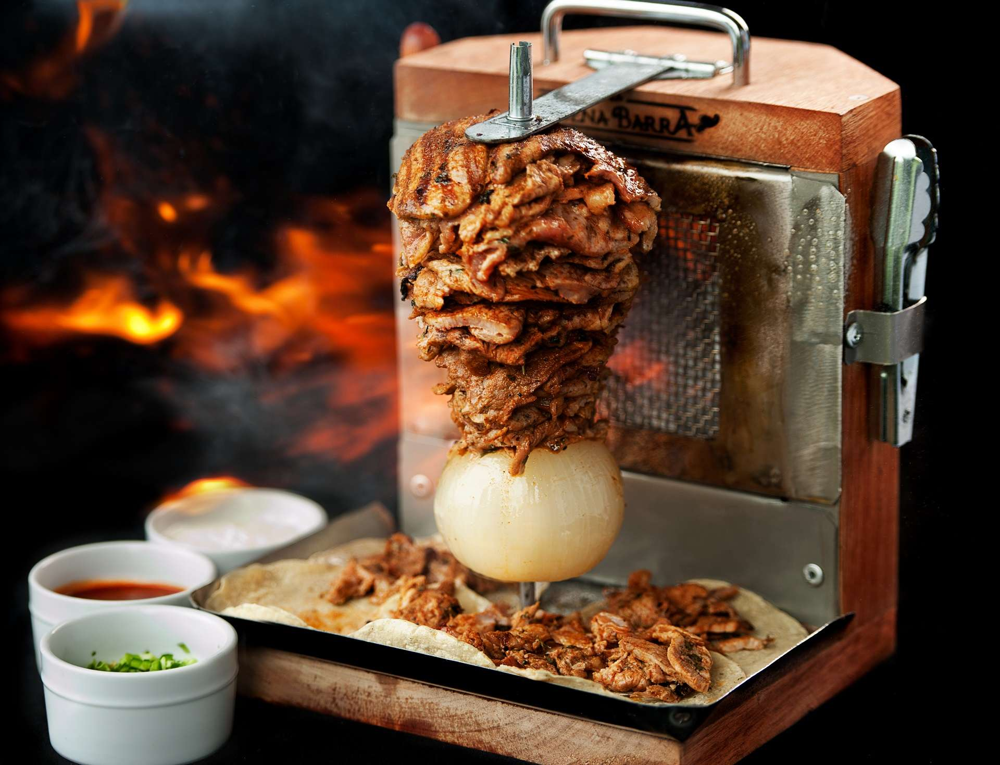
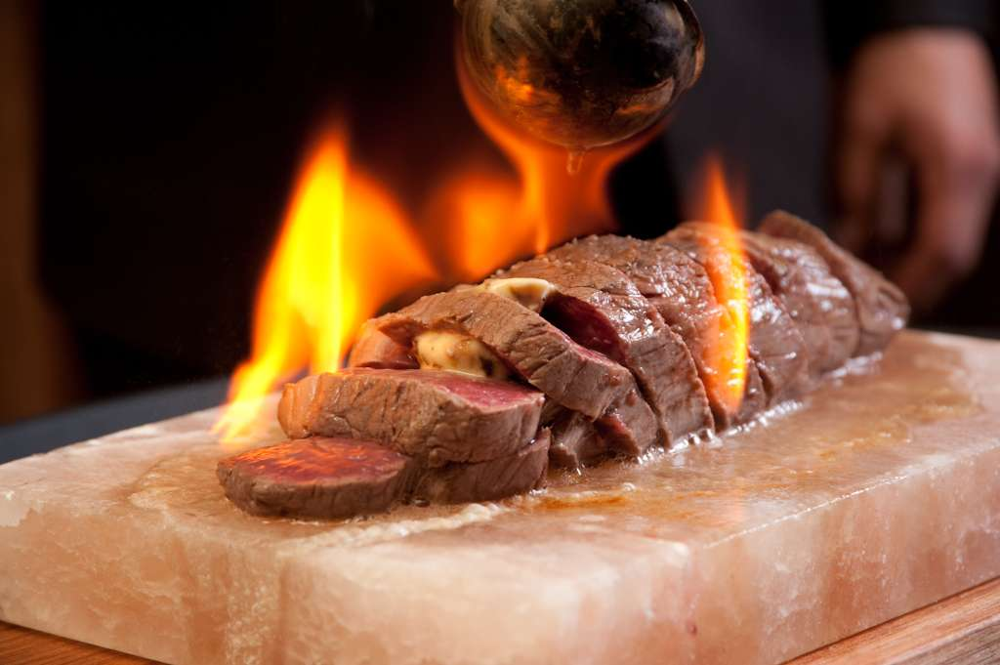
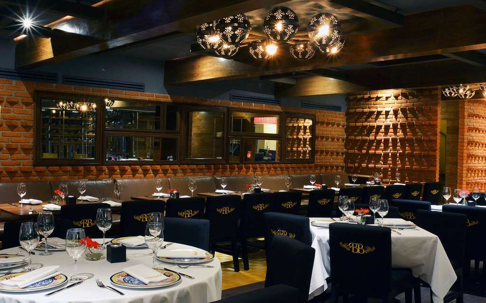
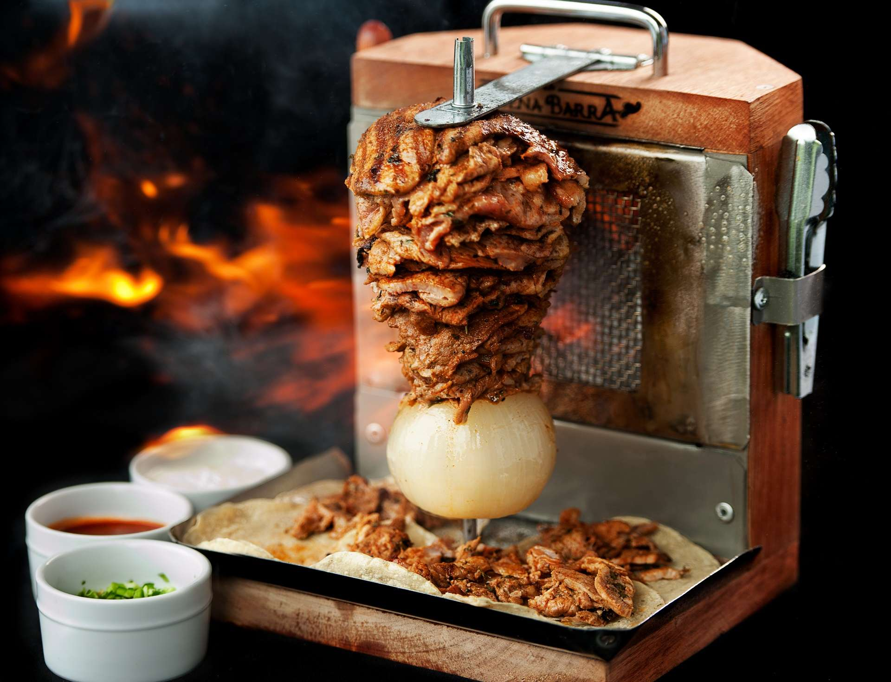
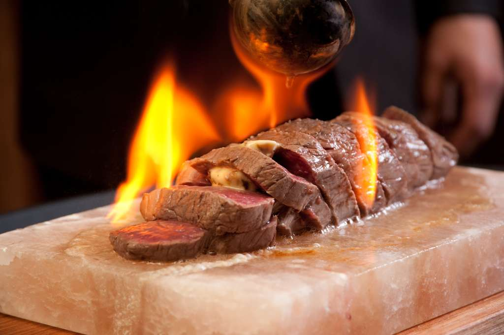
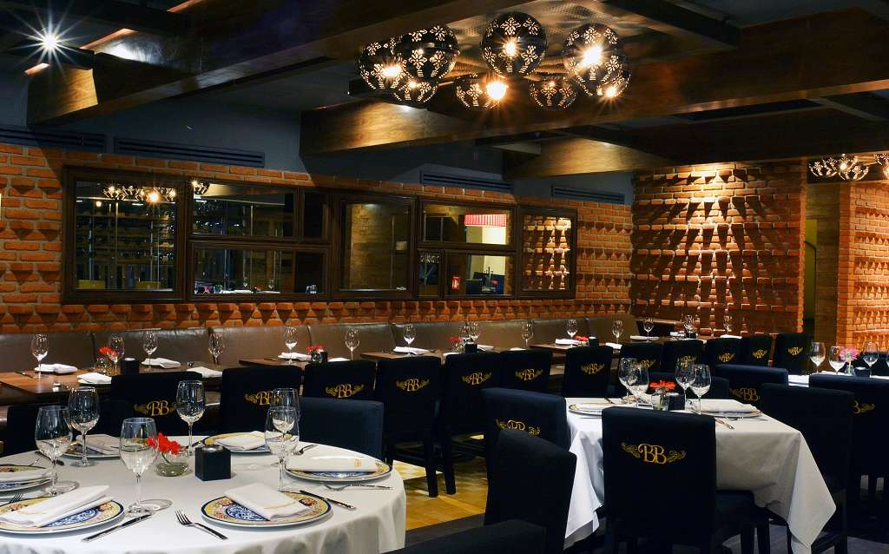

Grupo Buena Barra
Comida mexicana contemporanea
Disfruta
NUESTRAS SALONES
 





Conoce
Nuestra Historia
*
Nuestra historia se remonta al centro de la ciudad de Monterrey, en donde La Barra Antigua fue la semilla que algunos años más tarde, evolucionaría al concepto de alto nivel gastronómico que hace honor a los sabores norestenses de México; La Buena Barra. Monterrey nos vio nacer y crecer, después la Ciudad de México nos adoptó de la manera más cálida y hoy tenemos el placer de ofrecerles en cualquiera de nuestras dos sucursales, una experiencia culinaria que, estamos seguros, dejará satisfechos todos sus sentidos.